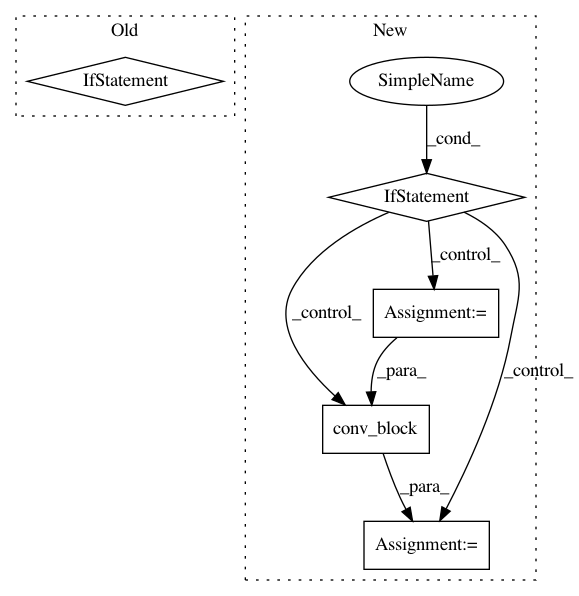

11c6bf1dbd051d087519ff771b39dac600c0d96d,batchflow/models/tf/encoder_decoder.py,EncoderDecoder,head,#Any#Any#Any#Any#,163
Before Change
if filters is None:
filters = channels
elif isinstance(filters, int):
if filters != channels and "layout" in kwargs:
filters = [filters] * filters_needed(kwargs["layout"])
if isinstance(filters, (list, tuple)) and len(filters) > 0:
if isinstance(filters, tuple):
filters = list(filters)
filters[-1] = channels
After Change
x = conv_block(x, **kwargs)
channels = cls.num_channels(targets)
if cls.num_channels(x) != channels:
with tf.variable_scope("final"):
x = cls.crop(x, targets, kwargs["data_format"])
args = cls.combine_kwargs(kwargs, dict(layout="c", kernel_size=1, filters=channels))
x = conv_block(x, **args)
return x
@classmethod
def block(cls, inputs, name="block", **kwargs):
In pattern: SUPERPATTERN
Frequency: 3
Non-data size: 5
Instances
Project Name: analysiscenter/batchflow
Commit Name: 11c6bf1dbd051d087519ff771b39dac600c0d96d
Time: 2019-07-29
Author: 7520522+a-arefina@users.noreply.github.com
File Name: batchflow/models/tf/encoder_decoder.py
Class Name: EncoderDecoder
Method Name: head
Project Name: analysiscenter/batchflow
Commit Name: eb75ee0ab83d5095aa7483eb115fdf5d3d3c33a6
Time: 2018-08-12
Author: rhudor@gmail.com
File Name: dataset/models/tf/resnet.py
Class Name: ResNet
Method Name: next_conv_block
Project Name: analysiscenter/batchflow
Commit Name: 9a481f22832e358ec2c8c8eb15aba1d39522fd09
Time: 2019-09-13
Author: 7520522+a-arefina@users.noreply.github.com
File Name: batchflow/models/tf/efficientnet.py
Class Name: ScalableModel
Method Name: block